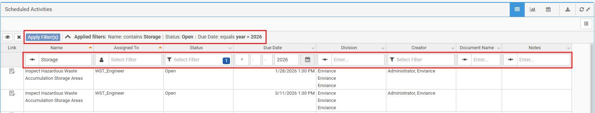
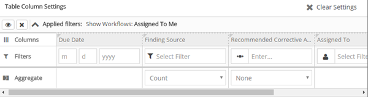
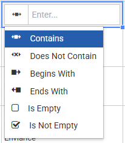
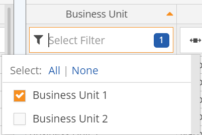
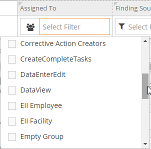
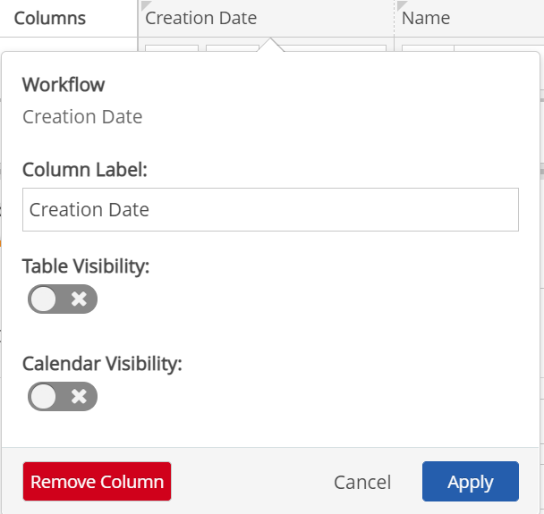
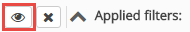

Designers can set up a table with filters already applied to either hidden fields or pre-applied to visible fields that the user can change at run time. These inline filters for tables and charts allow users to filter the data displayed by any field shown and view aggregations based on different filter settings. Chart result sets can be quickly filtered to analyze the data for relevant business uses.
Multiple filters may be added, using AND logic only. Filters may be applied to custom fields, included on Event Templates, workflow Form Templates, and system model objects, as well as the native fields Name, Active Date and Inactive Date. Aggregations visible in the panel will be applied to the visible (filtered) fields.
For users, the Applied Filters are shown at the top of the table, or below the chart, so that users can easily see any pre-configured filters. The Filters row in the Table Settings at the top of the table (or below the chart) shows the filter options for each column, depending on the field type.

"Applied filters" also shows filters for workflows by user participation or tasks where user is assignee or assignor. These filters are set up in the Advanced dialog for the workflow panel or task panel.
Apply filters
Users can set any number of filters before applying them to the panel.
To apply a filter to a column in a workflow or events panel:
From the Settings page, select Edit Panel Content. The Filters row in the Table Column Settings shows the filter options for each column, depending on the field type.

Select the filter field to see options. For some fields you must click the icon to select a filter option first.
Text Fields- Text fields require choosing an operative: Contains, Does Not Contain, Begins With, Ends With, Is Empty, or Is Not Empty. You can then enter text to use in the filter.

Drop-down Lists Drop-down list choices will be presented for those field types. If the list is long, you can type a few characters to find the value you want. If multiple selections are allowed, the number selected will be displayed in the filter box. Click on the number to see the selections. Click in the select box to edit the selections.

Users or Groups Fields To filter for users or groups, you must first click the icon to choose either Users or Groups. Then click the Select Filterbox to see the appropriate list and make your selections. If the list is long, you can type a few characters to find the value you want. The number selected will be displayed in the filter box. Click on the number to see the selections. Click in the select box to edit the selections.

Date Fields For a date field, you may enter a complete or partial date (for example, just the year). Date fields require choosing an operative.
Numeric Fields Numeric fields require selecting a comparison type.
Associated Object The Associated Object name and type fields will allow you to display only the specific object type, when there are two or more objects of different types associated with an event or workflow. In the case of incidents from the IncidentApp, where an incident may be associated with both a Facility and a employee POI, you can choose the object type Facility, and then be able to filter on the facility name. The employee POI will be ignored in the filter.
After configuring all filters, click Save to save all panel settings.
Default filter values that have been pre-configured in design mode will be applied on loading at run time. Users will be able to filter on any visible column shown in the table, including pre-configured filters. If you do not want users to be able to edit a column filter, you can hide the column so that it is not displayed in the table. However, the pre-set filter will still be applied.
Hide a filter field
In panel edit mode, click on the column head.
Select the Visibility option to turn visibility Off. Alternatively, to remove the column completely from the panel, select Remove Column.

Click Apply.
You can hide the filter settings row from users when the page is initially loaded if it is likely that users won't need this feature or to reduce clutter.
You can choose to hide the filter settings when the page is loaded. Below the "Applied filters" summary is a row showing the column filter options. The row with the column filter settings may be hidden from view by clicking the Toggle button.

When hidden, the filter settings row will not be seen. Click Toggle again to view them.
To remove all column filters, click the X next to the Applied Filters summary.